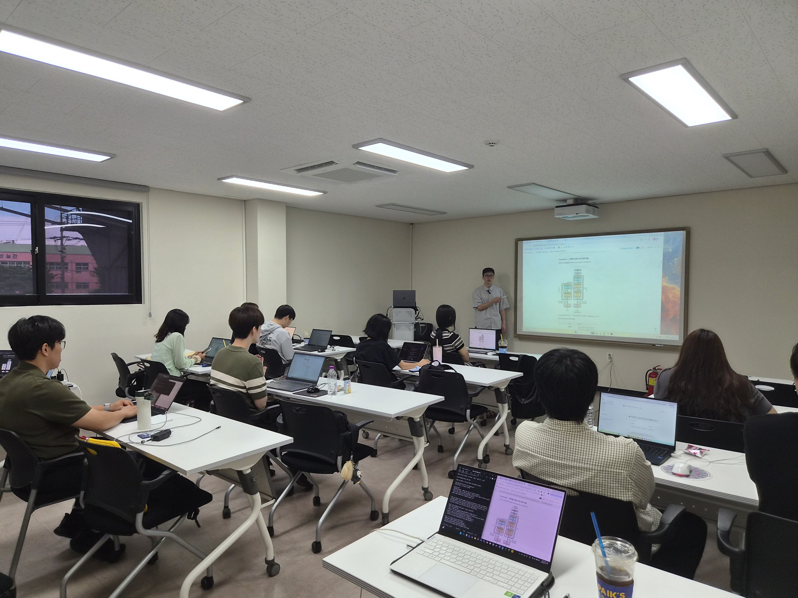
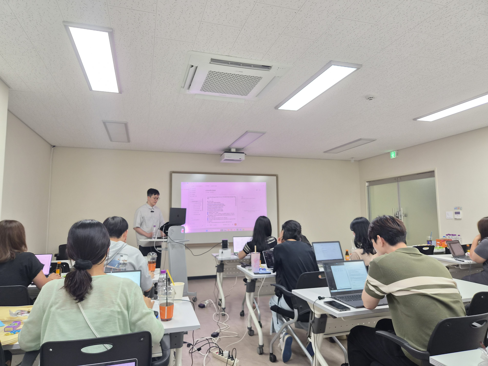

요약
업무 자료의 핵심을 목적에 맞게 정리
AX RECIPE · 생성형 AI 활용
[AX 레시피 - 생성형 AI 활용] 현장의 문제를 AI로 바꾸는 생성형 AI 기반 업무 적용 실무
현장의 반복·비효율 업무를 찾고, 생성형 AI 활용법을 익힌 뒤 개인화 AI 앱을 설계·제작합니다. 마지막에는 업무 적용과 공유 방안까지 완성합니다.
문제 진단부터 설계·제작·적용까지 한 흐름으로 진행합니다.

현장 업무 문제 진단
생성형 AI 업무 활용
개인화 AI 앱 제작
적용 및 확산
현장 업무 문제 진단
첫 교시에는 현장에서 반복되거나 비효율적인 업무를 도출합니다. 업무를 AI가 보조할 수 있는 단위로 분해하고, 효과와 난이도를 기준으로 적용 순서를 정합니다.
시간이 오래 걸리거나 반복되는 현장 업무를 찾습니다.
AI가 보조할 수 있는 작업 단위로 업무를 나눕니다.
예상 효과와 적용 난이도를 기준으로 순서를 정합니다.
생성형 AI 업무 활용
요약·작성·분류·검토 등 업무 유형별 활용법을 익히고, 원하는 결과를 위한 프롬프트 구성과 AI 결과 검증을 실습합니다.

업무 목적을 정하고
요청 → 결과 → 검증을 연결합니다.
8시간의 변화
어려운 기술 설명보다 실제 업무에 적용하는 순서에 맞춰 배웁니다.

세부 커리큘럼 · 총 8H
교시를 누르면 실제로 무엇을 해보고 무엇을 가져가는지 자세히 볼 수 있습니다.
현장 업무 문제를 진단하고, 생성형 AI로 업무를 보조하는 개인화 AI 앱을 직접 설계·제작하여 실제 업무에 적용합니다.
현장 업무의 Pain Point를 파악하고 AI 적용 후보를 정합니다.
생성형 AI를 업무 보조로 사용하는 방법을 익힙니다.
맞춤형 개인 AI 앱의 처리 흐름과 검수 기준을 설계합니다.
진단한 문제에 맞는 개인화 AI 앱을 만들고 실제 업무 기준으로 시험합니다.
제작한 AI 앱을 현업에 적용하기 위한 실행안을 완성합니다.
업무 유형별 AI 활용
요약·작성·분류·검토 업무를 기준으로 요청을 구성하고 결과를 검증합니다. 사용할 도구는 추후 안내합니다.
업무 자료의 핵심을 목적에 맞게 정리
원하는 결과와 형식을 담은 초안 생성
업무 자료를 기준에 따라 구분하고 정리
결과가 업무 기준에 맞는지 확인
교육 운영 일정
2026년 9월 29일 화요일, 오전 9시부터 오후 6시까지 진행되는 총 8시간 과정입니다.
현장 업무 문제 진단부터 개인화 AI 앱 제작과 적용안 완성까지
※ 강사: 김동현 · 입실 안내: 추후 안내
교육 결과
현장의 반복·비효율 업무를 효과와 난이도로 정리합니다.
원하는 결과를 위한 요청 구조와 검증 방법을 익힙니다.
업무 자료를 연결하고 실제 업무 기준으로 동작을 시험합니다.
공유 방안과 보안·결과 검수 기준을 정리해 발표합니다.
교육 자료